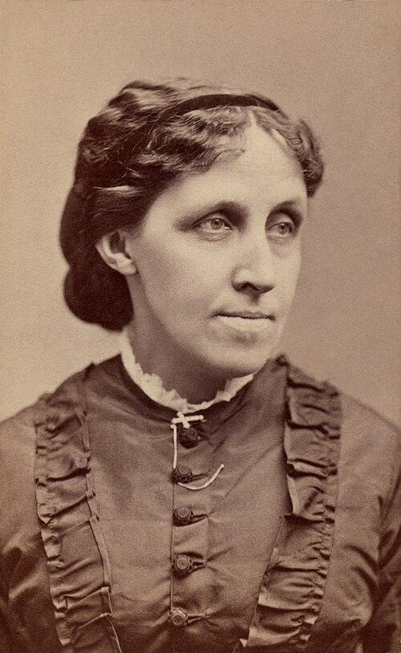

Louisa May Alcott
Omat haaveet kasvavat perheen keskellä.
Alcott antaa sisaruksille erilaiset luonteet, tavoitteet ja tavat kasvaa. Kodin arki avaa kysymyksiä työstä, luovuudesta ja naisen mahdollisuuksista.
Etsi teokset kirjastostaElämä ja teokset
Louisa May Alcott varttui Uudessa-Englannissa perheessä, joka arvosti oppimista ja yhteiskunnallisia uudistuksia. Talousvaikeudet veivät hänet nuorena monenlaisiin töihin. Kirjoittamisesta tuli sekä kutsumus että keino elättää perhettä.
Yhdysvaltain sisällissodan aikana Alcott työskenteli sairaanhoitajana. Hän kirjoitti myös aikuisille tarkoitettuja jännityskertomuksia. Vuosina 1868–1869 kahdessa osassa ilmestynyt Pikku naisia ammentaa sisarusten yhteisestä lapsuudesta, mutta muuttaa kokemukset itsenäiseksi romaaniksi.
Tyyli ja teemat
Alcottin vahvuus on läheisten ihmisten välisissä pienissä törmäyksissä. Huumori, arkiset pettymykset ja sovinnot tuovat kasvutarinan lähelle lukijaa. Henkilöhahmot eivät haaveile samasta elämästä: juuri erot tekevät heidän yhteydestään kiinnostavan.
Sisaruus · Kasvaminen · Luova työ
Aloita tästä
Pikku naisia
Megin, Jon, Bethin ja Amyn erilaiset haaveet kohtaavat Marchin perheen arjessa. Lämmin kasvutarina sisaruudesta, toimeentulosta ja oman tien etsimisestä.
Seuraa erityisesti, miten sisarusten käsitykset onnistuneesta elämästä eroavat toisistaan.